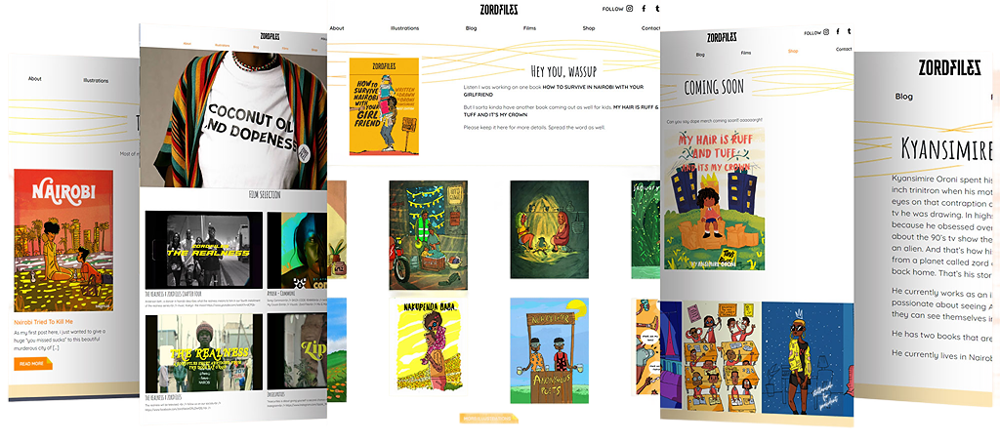
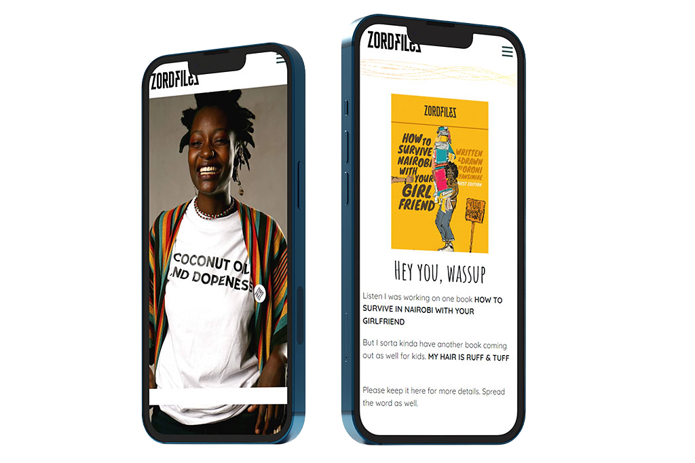

Client
Zordfiles
Role
WEB DEVELOPER
Kyansimire Oroni, alias Zordfiles, is an illustrator, filmmaker and photographer living in Nairobi- Kenya
Zordfiles has been a professional artist for 10 years and this new landmark in his career prompted him to have a website created to showcase his artwork and sell his current and future merchandise that includes postcards, framed illustrations and books
Visualsnare was tasked with developing the website to elevate his business. This will spread his artwork to more people and give his business more opportunities

